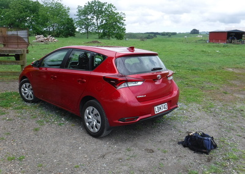
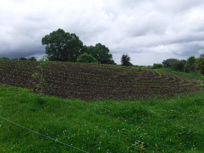
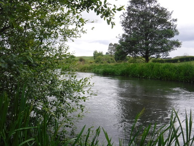
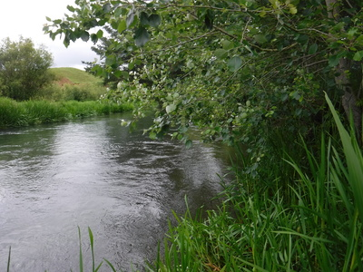
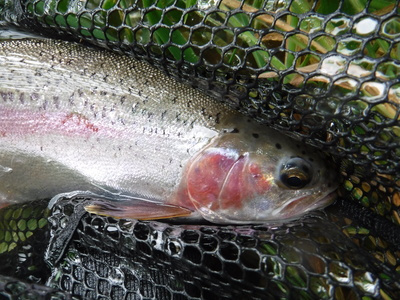

釣行日誌 ＮＺ編 「一期一会の旅：A Sentimental Journey」
昔なじみのスプリングクリークへ
11/27(TUE)-1
今朝はゆっくり起きて、トーストとミルクの朝食をセルフサービスでいただいた。奥さんに洗濯機の使い方を教えてもらい、南島釣行で溜まった洗濯物を洗った。あまり天気が良くなさそうだったので、脱水してから部屋の中に乾させていただく。
空のペットボトル３本に、持参したジョウゴを使ってオレンジジュースを満たし、さて、出撃だ。今日もショッピングモールのサブウェイにてサンドイッチ２個を買い込み、プリントした地図を頼りにステートハイウェイ１号線を目指す。SH1に出てしまえばあとは昔なじみの高速道路をひたすら南下する。途中、ケンブリッジという小さな町のあたりで、昔はグネグネと曲がりの多かったSH1が町並みを迂回しており、片側３車線もある素晴らしいハイウェイと呼ぶにふさわしい道路になっていた。舗装の出来も見事であり、道路表面がスベスベであった。
『へえぇ～！ニュージーランドでもこんな高度な舗装工事が出来るようになったんだ。』
と、驚かされた。
釣り場の近くの Tirau という小さな町のインフォメーションセンターに立ち寄ると、各種地図がバーゲン価格で売られていた。昨今のスマホの隆盛やオンラインマップ、ナビゲーションアプリの発達で、紙の地図なんかはすでに時代遅れになってしまったのだろう。
トイレを済ませ、SH1から狭く曲がりくねった地方道に入り、懐かしのスプリングクリークを目指す。お目当てにしていた、川幅の広いルアー向きの区間に１番近い牧場へ行こうと思っていたのだが、入り口に大きな看板で、
「関係者以外立ち入り禁止！」
と書かれていたので、これはちょっと遠慮した方が良いかな....と、もう１区間上流を目指す。あの牧場は昔、通称キャプテンさんという気さくな牧場主が住んでいて、釣り上げた大物レインボーを差し上げたりして足繁く通ったものであったが。
地方道を少し南へ進んでから右に折れて未舗装の農道へ入り、もうもうと砂埃を上げつつ丘の上の牧場を目指す。農家とミルキングシェッドの間の空き地に車を停め、あたりを見渡すが誰の気配も無い。農家の玄関をノックしてみるが誰も出ない。戻って10分ほど待ってみたがやはり人気は無い。これは別の牧場に行った方が良いかな？と考え直した所に丘の下からエンジンの音が聞こえて来た。
『おっ！牧場主さんが来たかな？』
期待を込めて見つめていると、髭もじゃ顔のおじいさんとマオリ系の中年の女性が４輪バギーに２人乗りで現れた。ニコニコと歩いて行くと、こちらが挨拶する前に、
「よぉ！釣りか？」
と牧場主らしいおじいさんが大声で呼びかけてきた。
「はい！そうです！ 牧場の中を歩いて下の川まで行って良いですかね？」
「ああ、もちろんだとも！ 頑張れよ！」
「僕はゴウと言います。ありがとうございます。」
「俺はジムだ。よろしくな。」
「車はあそこに停めておいて良いですか？」
「OK！ ノープロブレム。」
と言うことで釣りを快諾していただき、車に戻って支度を始める。昔、この川ではルアーで何度も良い思いをしたことがあったので、荷物になるがわざわざスピニングタックルも用意してきたのだ。はやる心で懐かしのUFM製パックロッドを繋ぎ、今回新調したダイワのスピニングリール レガリス LT2500S-XHをセットする。普段愛用している往年の名機、ミッチェル409 は紛失が怖くて持ってくる気にならなかったのだ。ラインは蛍光黄色の６ポンド。ウェストバッグにタッパーウェアに入れたサンドイッチ２個とジュース２本、雨具と雨帽子などを入れ、車のキーと携帯電話、パスポート、国外免許証は防水ポーチに入れた上でベストの背中に仕舞う。足回りは化繊のショーツに黒色のタイツ、ネオプレンストッキングにウェーディングシューズである。スネから膝にかけては日本でも活躍したネオプレンのゲーターを巻き付ける。

時刻は11時20分過ぎ。川を目指して歩き出す。足取りは軽いがミルキングシェッド脇のゲートには、泥と大量の牛の○○○が落ちていて閉口させられた。しかし、遠くに見える透き通った流れを見ればそんな思いは消し飛んでしまう。
牛たちが踏み固めた泥道を下って行くと、向こうからジムさんと女性とがまたバギーに乗って、２頭の牛をゆっくりと僕のいる方へと追い立ててきた。そこで、牛を通してやろうと柵の脇に寄ってしゃがんでみたのだが、牛たちは僕の姿に怯えてしまい動こうとしない。ジムさんが「シッシッ！」と声で追い立てるのだが、牛たちは固まってしまって動かない。しょうがないのでジムさんがバギーの前部で牛のお尻を突っつくと、驚いた１頭が柵を跳び越えて群れの中に入ってしまった。もう１頭は僕のしゃがんでいる横を怒濤のごとく走り去って丘の上へと向かった。
『ヤレヤレ....』
「お手数掛けましたァ！」
ジムさん達に声を掛け、流れを目指して再び歩き出す。
途中、牧草地を耕して、黒い土にトウモロコシの苗に似た植物が植えられていた。後で聞いたら牛の飼料になる植物だそうだ。

農道から柵を開けて牧草地を柵伝いに下って行く。この先は本流と支流の合流点になっているのだ。いざ合流点に着いてみると、河畔の柳やポプラが昔よりもはるかに大きく成長して茂っており、20年近い時の流れを感じさせられた。川の流れは速く重く深く、難しい。

重く速い流れに負けないように、とりあえずファストシンキングミノーを結んで探りを入れる。昔は、フライにせよルアーにせよ投げれば必ず１尾は出た、この合流点では魚が出ず、しばらく釣り下る。
昼近くなって、藪下の深みから、今日の初物が出た。30cmクラスはここのアベレージサイズ。このサイズでも野生のレインボーはよく引く。


釣行日誌ＮＺ編 目次へ
サイトマップ
ホームへ
お問い合わせ